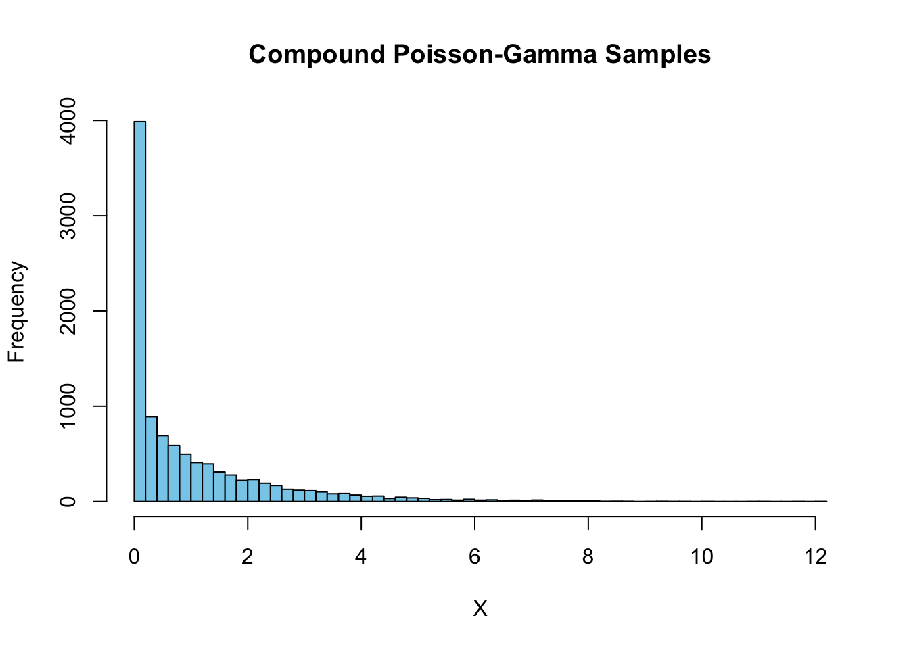

Hazard ratios are problematic summary measures for survival analysis (Dumas and Stensrud 2025; Post, Van Den Heuvel, and Putter 2024; Stensrud et al. 2019); even in well-conducted randomized trials, hazard ratios fail to capture a measure of causal effect, unless we make the (ludicrous) assumption that in the control group, every individual has the exact same hazard function.
Dumas and Stensrud recently summarized three main problems with hazard ratios (Dumas and Stensrud 2025): built-in selection bias, non-collapsibility, and violations of the proportional hazards assumption.
Non-collapsibility
Say we have two subgroups defined by a feature \(X\), for example, men and women. Let’s assume that some measure of causal effect (e.g. a hazard ratio, odds ratio, risk difference or risk ratio) is \(1.4\) in the first subgroup and \(1.8\) in the second subgroup, what is then the measure of effect in the combined population? Intuitively, we would want this to be somewhere in between \(1.4\) and \(1.8\), meaning some (potentially weighted) average of the two subgroup effects. This is only true for measures of effect that are collapsible, such as risk difference or risk ratio. The hazard ratio and odds ratio are not collapsible, which means that the effect in the combined population can be below \(1.4\) or above \(1.8\).
An important question is: say the hazard ratio is above (or below) 1 in both subgroups, can it ever be below (or above) 1 in the combined population?
We’ll simulate 1000000 observations of a hypothetical two-arm randomized trial, with a feature \(X\) that follows a compound Poisson-Gamma distribution, a baseline hazard function quadratic in time, and a treatment effect that is multiplicative on the baseline hazard.
The treatment effect is constant and the same for all values of \(X\), meaning that there is heterogeneity in the hazard of the control group depending on \(X\), but the causal hazard ratio (as defined in Post (Post, Van Den Heuvel, and Putter 2024)) is constant across all values of \(X\). In practice, the hazard ratio estimated in trials is the Survivor Marginalized Causal Hazard Ratio, meaning that it is estimated from the patients who are still alive at a given time point, which is not the same as the causal hazard ratio.
The example that Post provides shows that the (time-varying) Survivor Marginalized Causal Hazard Ratio can start above 1, but over time drop below 1 because of the depletion of susceptibles in one trial arm (i.e. the hazard ratio’s built-in selection bias).
# simulate from compound poissonlibrary(data.table)library(survival)n =1e6simulate_cp_gamma <-function(rho, eta, nu, n =1) {# Simulate n independent draws from CPoi(rho, eta, nu)replicate(n, { N <-rpois(1, rho)if (N ==0) {return(0) } else {sum(rgamma(N, shape = eta, scale = nu)) } })}set.seed(421)# Parameterstheta0 =2# variancerho <-3/theta0 # Poisson rate (theta0)eta <- .5# Gamma shapenu <- theta0 *2/3# Gamma scale# Simulate 10000 valuessamples <-simulate_cp_gamma(rho, eta, nu, n =10000)# Empirical mean and varianceemp_mean <-mean(samples)emp_var <-var(samples)# Theoretical mean and variancetheo_mean <- rho * eta * nutheo_var <- rho * eta * nu^2* (1+ eta)# cat("Empirical mean:", emp_mean, "\n")# cat("Theoretical mean:", theo_mean, "\n")# cat("Empirical variance:", emp_var, "\n")# cat("Theoretical variance:", theo_var, "\n")# Histogramhist(samples, breaks =50, col ="skyblue", main ="Compound Poisson-Gamma Samples", xlab ="X")

We now define the hazard and cumulative hazard functions used for the simulation.
# add baseline hazardl0_t <-function(t) (t^2) /20# treatment effect mu =3# hazard functionl0 =function(t, a) {l0_t(t) * mu^a}# cumulative hazard functionL0 =function(t, a, x) { x * ((t^3) /60) * mu^a}# inverse of cum hazard fnL0_inv <-function(u, a, x) {# Solve for t in L0(t, a, x) = u# u = x * ((t^3) / 60) * mu^a# Rearranging gives t = (60 * u / (x * mu^a))^(1/3) (60* u / (x * mu^a))^(1/3)}# setup data tabledf <-data.table(x=samples, a=rep(c(0,1), each=n/2))# simulate udf[, u :=runif(.N)]# find the survival timedf[, time :=L0_inv(-log(u), a, x)]# censor at maxtimemaxtime <-20df[, event:= time<= maxtime]df[time>maxtime, `:=`(time=maxtime, event=0)]# plot survfit per a with colorssf <-survfit(Surv(time,event)~a, data=df)plot(sf, col=1:2)legend("topright", legend=c("a=0", "a=1"), col=1:2, lty=1)
# fit cox modelcox_model <-coxph(Surv(time,event)~a, data=df)print(summary(cox_model))
Call:
coxph(formula = Surv(time, event) ~ a, data = df)
n= 1000000, number of events= 757625
coef exp(coef) se(coef) z Pr(>|z|)
a 0.2231 1.2500 0.0023 97 <2e-16 ***
---
Signif. codes: 0 '***' 0.001 '**' 0.01 '*' 0.05 '.' 0.1 ' ' 1
exp(coef) exp(-coef) lower .95 upper .95
a 1.25 0.8 1.244 1.256
Concordance= 0.549 (se = 0 )
Likelihood ratio test= 9394 on 1 df, p=<2e-16
Wald test = 9409 on 1 df, p=<2e-16
Score (logrank) test = 9447 on 1 df, p=<2e-16
Sign-flip over time
The marginal cox model estimate has the correct sign for the treatment effect, but we will see that over time the hazard ratio changes sign
## check time-varying hazardzph <-cox.zph(cox_model)plot(zph, var ="a") # Plots log(HR) over time with smoothingabline(h =0, col ="red", lty =2) # Add a horizontal line at 0 for reference
Marginal sign-flip with Delayed Entry
Can this ever mean we estimate a marginal hazard ratio of the wrong sign in an RCT? It is possible in the context of delayed entry. Delayed entry means that some patients enter the study at a later time point. An example would be if we randomize patients to a certain treatment from \(t=0\), but are only able to include their information after some (random) lead time. For example, if we randomize regions in a country to add chloride to the drinking water at a fixed time point \(t=0\)(like in Tofail et al. 2018), but for logistical reasons, we can only start collecting follow-up data on individuals in those regions in a staggered fashion, with some regions starting data collection at \(t=0\), some at \(t=1\), and so on.
Because the hazard ratio changes sign over time, if we include patients who enter the study at a later time point, we can end up with a hazard ratio that is below 1, even though the causal hazard ratio is above 1 for all patients at all time points.
# fit model with delayed entrydf[, entry_time:=runif(.N, 0, maxtime)]cox_model_delayed <-coxph(Surv(entry_time, time, event) ~ a, data = df[time>entry_time])summary(cox_model_delayed)
Call:
coxph(formula = Surv(entry_time, time, event) ~ a, data = df[time >
entry_time])
n= 393157, number of events= 150782
coef exp(coef) se(coef) z Pr(>|z|)
a -0.08297 0.92037 0.00521 -15.93 <2e-16 ***
---
Signif. codes: 0 '***' 0.001 '**' 0.01 '*' 0.05 '.' 0.1 ' ' 1
exp(coef) exp(-coef) lower .95 upper .95
a 0.9204 1.087 0.911 0.9298
Concordance= 0.524 (se = 0.001 )
Likelihood ratio test= 254.6 on 1 df, p=<2e-16
Wald test = 253.7 on 1 df, p=<2e-16
Score (logrank) test = 253.8 on 1 df, p=<2e-16
Conclusion
Can the marginal hazard ratio estimated in a randomized controlled trial have the wrong sign? Yes, it can—even when the causal hazard ratio is constant—if we allow for delayed entry. Is this likely to happen in practice? Probably not. But that doesn’t mean we should continue using the hazard ratio as a default summary measure. Better alternatives exist that can be directly derived from survival curves, such as absolute risk differences, risk ratios, and differences in restricted mean survival time.
References
Dumas, Elise, and Mats J. Stensrud. 2025. “How Hazard Ratios Can Mislead and Why It Matters in Practice.”European Journal of Epidemiology, June. https://doi.org/10.1007/s10654-025-01250-9.
Post, Richard A. J., Edwin R. Van Den Heuvel, and Hein Putter. 2024. “The Built-in Selection Bias of Hazard Ratios Formalized Using Structural Causal Models.”Lifetime Data Analysis 30 (2): 404–38. https://doi.org/10.1007/s10985-024-09617-y.
Stensrud, Mats J., John M. Aalen, Odd O. Aalen, and Morten Valberg. 2019. “Limitations of Hazard Ratios in Clinical Trials.”European Heart Journal 40 (17): 1378–83. https://doi.org/10.1093/eurheartj/ehy770.
Tofail, Fahmida, Lia Ch Fernald, Kishor K. Das, Mahbubur Rahman, Tahmeed Ahmed, Kaniz K. Jannat, Leanne Unicomb, et al. 2018. “Effect of Water Quality, Sanitation, Hand Washing, and Nutritional Interventions on Child Development in Rural Bangladesh (WASH Benefits Bangladesh): A Cluster-Randomised Controlled Trial.”The Lancet. Child & Adolescent Health 2 (4): 255–68. https://doi.org/10.1016/S2352-4642(18)30031-2.
Citation
BibTeX citation:
@online{van_amsterdam2025,
author = {van Amsterdam, Wouter},
title = {Flipping the Sign of Hazard Ratios},
date = {2025-07-04},
url = {https://vanamsterdam.github.io/posts/250704-hr-sign-flip.html},
langid = {en}
}